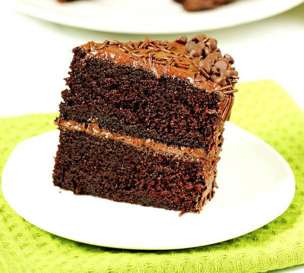

Chocolate Cake

Description:
Did you ever dream of baking the best chocolate cake? This super delicious, moist and rich
chocolate cake has never failed to amaze my family and friends
Ingredients:
- 3/4 cup + 2 tablespoon flour
- 1/4 cup + 2 tablespoon cocoa powder
- 1.5 tablespoon salt
- 3/4 tablespoon baking powder
- 3/4 tablespoon baking soda
- 1 cup sugar
- 1 egg
- 1.5 cup milk
- 1/4 cup oil
- 1 to 2 tablespoon vanilla extract
- 1.5 cup boiling water
- 1.5 cup butter
- 1 and 3/4 cup powdered sugar
- 4 tablespoon cocoa powder
- 1.5 tablespoon milk
- 1 teaspoon vanilla extract
Steps:
- Grease and line 2-6 inch cake pans.
- Place a sieve over a mixing bowl. Add flour.
- Add cocoa, baking powder, baking soda and salt. Sieve them all.
- Add sugar
- Mix everything very well until uniform. Make a well in the center.
- Heat half cup water in a pot.
- Pour milk, egg, oil and vanilla to the mix.
- Whisk wet ingredients first, then whisk wet and dry ingredients till combined. Do not
over mix.
- You will have a slightly thick batter at this stage.
- Quickly pour hot water to the batter, The water must be very hot.
- Immediately whisk the batter just until the water is absorbed and the batter looks
uniform. Batter is very runny at this stage.
- Pour this to the pans. Tap the pan to the counter 2 to 3 times.
- Bake for 28 to 30 minutes or until the tester comes out clean. Please adjust the timing
depending on the oven and pan sizes.
- Invert to a cooling rack. Cool completely before frosting